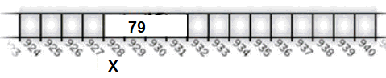

Cho biết kết quả của chương trình sau:
#include <iostream> using namespace std; void test(int A[]) { A[2]++; } int main() { int b[7]; b[2]=8; test(b); cout<<b[2]; return 0; }
Khi khai báo int x = 79;
TBD dành ra một vùng nhớ 4 byte trong bộ nhớ (RAM) để lưu trữ giá trị của biến x.
Các ô nhớ được đánh số thứ tự từ 0 trở đi. Số thứ tự đó còn được gọi là địa chỉ của ô nhớ.

Để xem/lấy địa chỉ của vùng nhớ của biến, ta dùng kí hiệu &, Ví dụ : cout<<&x;
Biến lưu địa chỉ của ô nhớ (hoặc vùng nhớ) được gọi là con trỏ.
Khai báo con trỏ: <kiểu dữ liệu> * <tên biến>;
int * y; //y là con trỏ trỏ đến vùng nhớ kiểu int;
Câu hỏi: Khai báo int * a, b; có nghĩa là...
A. a và b là hai con trỏ.
B. a là con trỏ còn b không phải
C. b là con trỏ còn a không phải
#include <iostream> using namespace std; int main() { int b=6; int* c; c = &b; cout<<"Dia chi bien b la "<<c; return 0; }
Lấy giá trị lưu trong vùng nhớ của con trỏ p: *p, Ví dụ : cout << *p;
#include <iostream> using namespace std; int main() { int b=6; int* c; c = &b; cout<<"Dia chi bien b la "<<c<<endl; cout<<"Gia tri cua bien b la "<<*c; return 0; }
1 #include <iostream> 2 using namespace std; 3 int main() 4 { 5 int b=6; 6 int* c; 7 c = &b; 8 cout<<"Dia chi bien b la "<<c<<endl; 9 *c=7; 10 cout<<"Gia tri cua bien b la "<<b; 11 return 0; 12 }
Biến con trỏ để lưu địa chỉ vùng nhớ.
Con trỏ không trỏ vào đâu là con trỏ rỗng (NULL).
Con trỏ trong ngôn ngữ C/C++ vốn không an toàn. Nếu sử dụng không hợp lý có thể gây crash chương trình.
Ví dụ :
int x; int &y = x;
Lúc này, 2 biến x và y là một, sử dụng x hoặc y là như nhau.
Câu hỏi: Tại sao cần biến tham chiếu?
long long thu(int i, bool gh,char dig, bool tang, bool nghia) { bool ghm; if (i < 0) { return 1; } if(gh == false && F[i][dig][tang][nghia] >= 0) return F[i][dig][tang][nghia]; long long kq=0; kq %= 1000000007; if (gh==false) F[i][dig][tang][nghia] = kq; return kq; }trở thành
long long thu(int i, bool gh,char dig, bool tang, bool nghia) { bool ghm; if (i < 0) { return 1; } int &trangthai = F[i][dig][tang][nghia]; if(gh == false && trangthai >= 0) return trangthai; long long kq=0; kq %= 1000000007; if (gh==false) trangthai = kq; return kq; }